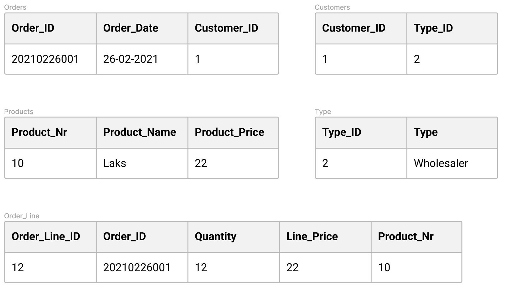

PBI
- Ingen kolonner må gentage en anden kolonnes værdi.
- Atomare værdier.
- Hvis en tabel har ens attributter af felter inden for samme primærnøgle (vare 1, vare 2, vare 3), så skal denne gruppe af felter fjernes fra tabellen og lægges over i en ny tabel sammen med en kopi af primærnøglen. (Kig på eksemplet i bunden at artiklen).
- Tabellen skal opfylde alle krav for 1. normalform.
- Hvis en tabel har en sammensat nøgle skal alle felter, der ikke indgår i nøglen, afhænge af den samlede nøgle.
- Alle non-prime attributter skal være fuldt funktionelt afhængige af primær nøglen. (dvs. ingen partiel funktionel afhængighed).
- Hvis der kun findes en enkelt primær nøgle er tabellen allerede i 2. normalform, hvis der derimod er en sammensat primærnøgle, kan den stadig bringes til 2. normalform, ved at splitte tabellen op i separate tabeller.
- I third normal form (3NF) er kravet at datasættet optræder i 2NF, og at der ikke forekommer noget transitive dependency, derfor skal det afskaffes. Det gøres ved at vi udfolder vores tabeller yderligere:

Tabellen skal opfylde alle krav for 1. normalform. (Hvis BCNF er opfyldt, opfylder den automatisk 2. og 3. normalform).
I alle funktionelle afhængigheder A => B skal A være kandidat nøgle
Fortsæt til næste emne:
ADMINISTRATION →